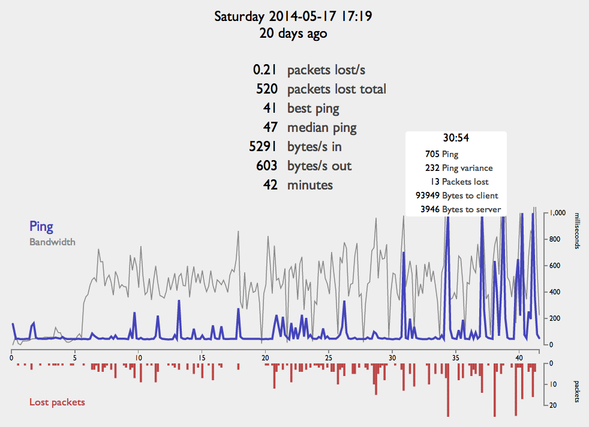

Logs of Lag is a browser tool for parsing League of Legends network logs. These logs are written by the LoL game client and are useful for understanding the kinds of lag you see when playing the game.
After dropping a logfile onto the browser window, the page will analyze the log locally on your computer and present a summary and a graph. The most important number in the summary table is "packets lost/s". Small numbers like 0.02/s are generally OK, losses greater than 0.10/s are bad. Median and best ping are interesting as well as they characterize the general latency you see during a game. 20–200ms is typical, it usually depends on your distance to Riot's data centers.
The graph below the table shows a timeline of ping (blue) and packets lost (red), once every 10 seconds. Note that the "ping" reported in the LoL client is a combination of round trip time to the server as well as transient problems with packet buffering or loss. Ping is normally stable unless there's packet lost. Bursts of packet loss are what causes noticeable lag in the game: pauses, rubberbanding, drifting, etc. Packet loss is typically caused by a congested network, whether your home router, your ISP, or Riot's network.
Log files are optionally uploaded to my server so that reports can be shared with other people. I may also use these logs for development and testing purposes. I intend to not reveal any personally identifiable information. The raw netlogs I keep privately are mostly anonymous (no user name), but occasionally contain your computer's IP address. The parsed logs used in shared reports should be entirely anonymous and not contain your IP address.
This tool is implemented as an HTML5 application using drag-and-drop files and SVG graphs (with D3.js). It should work in any modern browser. I develop on Chrome and occasionally test on Firefox and Safari. I do not have access to MSIE, but it should probably work in IE 10. No attempt has been made to make this tool useful on mobile devices.
I was inspired by lolparse.com, an excellent browser tool for parsing R3d logs to show you gameplay statistics like most played champions. It's a great site, try it!